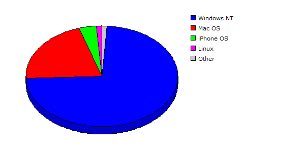

| Rank |
Operating System |
Hits |
Visitors |
| 1 |
Windows NT |
98485 |
80.01% |
6848 |
73.21% |
| 2 |
Mac OS |
22309 |
18.12% |
1943 |
20.77% |
| 3 |
iPhone OS |
742 |
00.60% |
338 |
03.61% |
| 4 |
Linux |
737 |
00.60% |
118 |
01.26% |
| 5 |
Windows XP |
351 |
00.29% |
55 |
00.59% |
| 6 |
Windows Vista or Windows Server 2008 |
254 |
00.21% |
29 |
00.31% |
| 7 |
Windows Server 2003 |
180 |
00.15% |
15 |
00.16% |
| 8 |
Windows |
23 |
00.02% |
3 |
00.03% |
| 9 |
Windows 2000 |
4 |
00.00% |
3 |
00.03% |
| 10 |
Red Hat |
1 |
00.00% |
1 |
00.01% |
| 11 |
FreeBSD |
11 |
00.01% |
1 |
00.01% |
| |
Total |
123097 |
9354 |
|
Description: This report contains statistics about the operating systems that your visitors use.
|
|